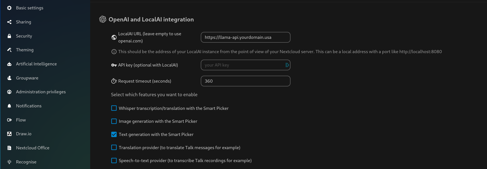

17 minutes
Reasonably Large Language Models
There’s no such thing as free lunch right? I think that openAI are learning this hard way as they are burning all kinds of cash and are no longer providing me with free tokens to use. I must say, I quite liked using CodeGPT in VSCode. Thankfully we have had a bunch of developments lately in the realm of self hosted local AI initiatives, following Facebook’s Llama2 release. At the same time more and more applications have plugins that lets them interact with openAI API compatible local LLMs, including VSCode! So, let’s dive in!
Ask Llama!
Tell me a joke about large language models
Why did the large language model go to therapy? Because it had a lot of issues with its input data.
TLDR;
I am pretty new to this whole AI thing, so we will split this into a few sections and list what worked for me and what didn’t. K8S deployment process first, the basics of what models are available and which ones worked best for me, a few simple integration and what we are going to cover in the future. I got most of what I wanted to work, but to unlock the full potential I need to try this on a GPU…
K8S Deployment
Ask Llama!
What is Kubernetes?
Kubernetes is an open-source container orchestration system that automates the deployment, scaling, and management of containerized applications. It helps to manage complex distributed systems and enables developers to focus on writing code instead of managing infrastructure.
The first well described github repository I have found that explains how to easily host openAI compatible API for an LLM was Umbrel’s: https://github.com/getumbrel/llama-gpt. They didn’t just provide examples and docker-compose files, but even a simple set of Kubernetes templates, which was a nice kick start for me. A few minutes of digging through that and we had a ready helm chart based on their templates. They actually built a slick little web UI that mimic chat GPT’s, very handy! What hasn’t worked for me though is their mechanism for downloading various models. To load a model into the containerized environment I first created a k8s volume manually, mounted it to a VS Code web server where I used the terminal to download all the models I wanted to use. The container that provides the openAI API is from the llama-cpp-python binding project found here: https://github.com/abetlen/llama-cpp-python.
The second project I found was definitely more accomplished and well maintained: the localai.io project. Where the Umbrel setup uses python c++ bindings, this one implements its own in golang: https://github.com/go-skynet/LocalAI. It does not provide any form of web UI add on, however, unlike the Umbrel repo, this one includes working helm charts, instructions for K8S deployment and a working model download mechanism! All you have to do is add URLs to a list in helm chart’s values.yaml file and an init container will take care of it. There is even a flag to force re-download any model that already exists on the volume in case that is necessary.
I ended up running both of them in my cluster to test and play with, and will likely continue to do so going forward. Having deployed and briefly used both of the setups I realized quickly that they are fairly slow on my current hardware, which means that if I can have 2 different setups with different models at the same time I can avoid long request queueing. Additionally it is worth noting that if you wish to use these LLM containers with multiple models, each model used will be loaded into memory, so you might end up with a container that consumes upwards of 16 GB of RAM. Going forward I decided to use the Umbrel project to host my chat-focused model and LocalAI.io for my code generation one, which means that I have 2 independent services serving distinct functions and 2 separate pods, each of which will use around 8GB of RAM and can run on a different node in my K8S cluster.
As I mentioned earlier, the llama-cpp-python base configured in Umbrel’s repo doesn’t come with a proper helm chart, however I will make mine public once I find the time to tidy it up and push it to Github. Stay tuned for that if you’re interested!
Models
Ask Llama!
What is a large language model
A large language model is an advanced artificial intelligence system designed to generate human-like text, understand natural language, and perform tasks such as translation, summarization, and question answering by analyzing vast amounts of data.
So, the APIs are not of very much use to anybody if you don’t give them a model to work with. Me being super new to all this, I started my research from the Umbrel’s llama-gpt repo’s readme.
Handily, it did contain a nice table summarizing the models compatible with this setup:

What it however does not tell you, at least not explicitly, is what each of these models does or where to get them. I do understand that the B value stands for billions of parameters. The more parameters, the more accurate model, but the more memory and computational resources it needs to run (warning: vast oversimplification). If we dig a little and take a sneak peak at the docker-compose.yaml files in the repo, we will see the following in line 15:
(...)
MODEL_DOWNLOAD_URL: '${MODEL_DOWNLOAD_URL:-https://huggingface.co/TheBloke/Nous-Hermes-Llama-2-7B-GGML/resolve/main/nous-hermes-llama-2-7b.ggmlv3.q4_0.bin}'
(...)
Aha! This is where they are getting the models from. Short duck duck go later, and we find out that huggingface.co is a fantastic repository for all kinds of AI models, ready to be downloaded for free. I recommend reading the repositories that you can find there, as they describe often in detail what each model does, what it is good at and what requirements it has. The key thing I learned is this:
- Models marked with
GGMLare an older standard, single-file packaged models that can run on a CPU - Models marked with
GGUFare meant to be a more versatile, improved version of GGML packaging for ML models
There are a lot of different parameters that each model is pre-configured with, but from reading the info in the repos, models marked q4_0 give the best balance of speed and accuracy for a given parameter size (usually).
Yes, this was a quick search and a bunch of trial and error, so if you want to explain this to me or know of a cool resource online that I could read or watch to understand these parameters better, hit me up on mastodon!
From my side, I also have to give a shout out to https://gpt4all.io/, as it also has a lot of useful information about the relative qualities and purpose of each model.
Now, to set out some expectations and context, I am running these LLMs in my K8S cluster on CPUs. My home lab has 3 nodes, each spotting a Ryzen 3000 CPU. This means AVX1 and AVX2 but not AVX512. For the uninitiated, those are vector instruction set extensions which help accelerate some of the AI tasks. On each of these boxes I have a VM with CPU passthrough configured to make sure the workloads see the extensions, and each with 6 virtual CPU cores (6 threads essentially).
Chat Models
In the couple of days that I played with all of these, there were 2 models that worked reasonably well on my machines:
Each of those models are about 8GB in size (i.e. will take 8GB of RAM once loaded up) and will run reasonably happily from within the llama-cpp-python container. Most of the queries I asked these models returned quickly enough to be considered “interactive”.
Pro tip. When you configure llama-cpp-python, make sure to set the n_threads environment variable to the number of threads you want to make available to the model for computing. All of the parameters available can be found in the official documentation.
Coding Models
I had very high hopes for the coding models I have to say, however I found most of them temperamental and tricky to work with. For some reason a lot of them, especially the codellama designated ones, were falling into a loop of repeated output and would generate the same answer over and over before I manually terminated them. I have not found a definitive answer online what causes this behavior and was not able to make them work with the VSCode integrations that I used. This left me with the one model that has been the most consistently working as a coding assistant:
This model worked fine in the VSCode integrations that I tried with it, though bear in mind, it is not an instruct model. It is good if you need it to explain code for you or suggest code via a chat-like interaction. It will not however work for straight up code generation inside your editor. OpenAI API is apparently not designed for that and you need a dedicated instruct model and an instruct compatible API endpoint. And self hosted versions of such software and models require the use of a GPU which I currently do not have! We will have to explore this avenue at another occasion then… More details on code generation in the integrations section.
Integrations
Umbrel Llama UI
Ok, so we have ourselves a web API deployed, we downloaded our models. It is finally time to use this stuff! The easiest way to start in my opinion is the Umbrel Llama UI that we can get from here. This creates a ChatGPT-like web UI for you that you can use to create threads of conversations with different basic parameters, such as the system prompt and temperature.

Just as an FYI:
- Temperature: setting on a scale of 0.0 to 1.0, that governs how factual and to the point answers will the model try to give you (0.0) vs how creative you want it to be (1.0), where setting 0.5 could be described as neutral.
- System prompt: information you can feed the model that sets the tone and the desired outcome of the conversation you are trying to have with the model. It can be things like: “You are a helpful AI and will answer concisely” or “We are going to be role playing where I am Mario and you are princess Peach”, you get the idea… This is great for general chat usage but also to test that your models are working and performing.
Nextcloud Assistant
Ask Llama!
What is Nextcloud?
Nextcloud is a open-source, self-hosted file synchronization and sharing platform that allows users to access their files from multiple devices, share files with others, and collaborate on projects.
Nextcloud has recently been making noise around their brand spanking new OpenAI integration being made available to use with self hosted LLMs. Being able to try this out was a fairly large motivator for me. Partly to see actually how easy it was to set up and partly because I found the features advertised, if not useful, then at least fun to try. So, once you have your own API endpoint ready, you can go to the administrator settings panel in your Nextcloud instance and enter it somewhere there… And by somewhere I mean somewhere, because for some reason it is in the Connected Accounts tab, and not the Artificial Intelligence tab, but what do I know. So, I enter it and… I get a green tick in the top right corner saying admin setting saved. That’s good right?

Well, all of the AI-related functionalities fail… And they fail after a long long time, which indicates some sort of a timeout issue maybe? I browsed through the logs and all I find this this…
OpenAI API error : Host violates local access rules
Which tells me nothing, and duck duck going it ain’t helping much either.
A couple of days pass and I find this beautiful issue on the Github issue tracker for the Nextcloud OpanAI integration: https://github.com/nextcloud/integration_openai/issues/47
Well, I had no idea I am supposed to be able to select the model there. The UI does not show that as an option, not even grayed out. As you see I chimed into the conversation, reporting similar behavior. Low and behold, I get a quick response from a dev and my issue is resolved!
So, now I have two key takeaways from this interaction. One is, that the devs clearly know what they’re doing and they were super quick to help me and fix my issue. Two, however, is a big problem in that I needed this help in the first place!
Basically, in order for Nextcloud to allow you to talk to a locally hosted LLM you need to change this setting:
'allow_local_remote_servers'=>true
in the main PHP config file for Nextcloud. But (at least at the time of writing) this is not said anywhere on the plugin install page or in the documentation as far as I am aware. And it seems that this flag is set to false by default. Oh dear…
So, with that out of the way, now we know that you have set things up correctly once the model field magically reveals itself to us in the config UI.
We can get to work now! Let’s generate some text!
I press that magical sparkly “Free Prompt” button and… Poof! Nothing XD To cut to the chase here and not drag this out much longer, it seems that Nextcloud is trying to execute most of the calls to your local LLM endpoint asynchronously. Which is a good choice in my opinion. The problem for me however is that I am running Nextcloud in Kubernetes, and to facilitate job processing I had set up a web cron container, that basically gets spawned twice per second to pick up any currently queued jobs. This includes but is not limited to the OpenAI API calls. This makes it fairly unpredictable as to when your jobs will be processed, and though largely fine for strictly speaking background jobs, I was expecting my AI queries to complete faster than within an hour or two… The only call that I found so far to be computed synchronously (as in, while you wait) is the smart picket ChatGPT-like text generation (with LocalAI) option that I triggered inside a note that I was editing. There you get a “preview” button, which will lock the prompt popup until you get your result from the LLM API.
Sadly my experiences with the ready made prompts that get run async, are also rather bad, and your milage may also vary depending on which LLM you use. With llama-2-13b-chat for example I generally get gems like this:
As far as I am aware there is no way to adjust the query language that is used behind these “summarize/generate headline/reformulate” buttons, so whether they will actually result in a useful output is up to luck. This is obviously only based on a few days of using this model and integration, so maybe I am just missing something…
In summary, with my current setup the local OpenAI API integration with Nextcloud is not very useful or practical. I feel like it lacks basic functionality such as the inability to set model temperature or system prompt, as well as being able to choose if a command is executed by the LLM synchronously or asynchronously. I am relatively positive that Nextcloud will iron out this integration and make it more configurable over time so I will happily revisit it at a later date. Though I really wish that they would come up with some other way to run jobs for Kubernetes deployments altogether, other than web cron…
Visual Studio Code
Ask Llama!
What is Visual Studio Code?
Visual Studio Code is a free, cross-platform source-code editor that runs on Windows, Linux, and macOS. It includes support for debugging, task running, and Git control, among other features. It is popular among developers for its speed, flexibility, and extensibility.
Now we are getting to where it’s at for productivity tasks! At least for my use case. AI assisted programming was something that I was already familiar with by the virtue of using the CodeGPT plugin for VSCode. I wouldn’t call myself a power user but I certainly found it useful at more than one occasion and wanted to find a self-hosted alternative that will respect my data and not charge me a subscription!
In the end I found and tested two extensions which can be used with a local OpenAI API endpoint, Wingman and Continue.
Wingman
Wingman is the first VSCode extension that I found and I really like the project. What it essentially is, is a set of pre-configured but user customizable queries that you can ask your LLM, with a mechanism to automatically paste the responses into the file you’re editing.
You can select actions of various categories, such as completion, testing, refactoring or just chat. Where I think the real power comes from here is the customizability. You can add your own prompts in the json config file, here’s the example it comes with:
"wingman.userCommands": [
{
"command": "exImprove",
"label": "Suggest improvements",
"userMessageTemplate": "I have the following {{language}} code:\n```{{filetype}}\n{{text_selection}}\n```\nPlease provide a list of suggestions for improving the code in markdown format. Consider aspects such as readability, performance, maintainability, and best coding practices. Explain each suggestion briefly, highlighting the specific areas that could be enhanced. Your suggestions should aim to improve the code without changing its behavior.",
"systemMessageTemplate": "You are an assistant to a {{language}} developer.",
"callbackType": "none",
"category": "My prompts"
}
]
This article is sadly not going to cover how well most of the features work. This is because most of the more interesting commands that I ran via Wingman (or Continue for that matter), resulted in my server CPUs spinning away and nothing else.
I was still able to do simple things, such as asking the LLM to generate comments for simple code blocks, or use the built in chat to ask programming-specific questions.
Continue
Continue is another alternative which is very close in functionality to Wingman, with a few subtle differences. For a start, Continue is more keyboard driven. You’re not selecting query types from a menu but rather type / followed by the type of command you want to run. This also includes code editing, generating tests, comments, etc.
You can also configure multiple backends simultaneously and switch between them from the UI, which is very useful if you want to split your use between a local and a public cloud API or just when you’re testing multiple models, maybe specific for different programming languages…
Also, where Wingman basically overrides the code you pasted into it when you ask it to modify it, Continue creates you a visual diff, which you can either accept, reject or ask for adjustments to. Very neat, and which one you prefer depends on your style of working with code and coding editors.
With Continue you can also simply add code to the context of specific queries by selecting it and pressing ctrl+m. There will then be a visual queue that the block is attached and you can remove it at any point. All of your chat history and context is also logged for you to browse through later which I definitely like too.
The models you want to use can be easily configured via modifying a config.py residing in your home dir (~/.continue/config.py). Here’s my block for the 3 models available on my local-ai instance:
...
models=Models(
saved=[OpenAI(
model="nous-hermes-llama2-13b.ggmlv3.q4_0.bin",
api_key="",
api_base="https://local-ai.octopusx.de"
),
OpenAI(
model="starcoder.ggmlv3.q4_0.bin",
system_message="You are a friendly AI that is helping me write high quality Python code. Give short and concrete answers.",
api_key="",
api_base="https://local-ai.octopusx.de"
)],
default=OpenAI(
model="ggml-model-gpt4all-falcon-q4_0.bin",
system_message="You are a friendly AI that is helping me write high quality Python code. Give short and concrete answers.",
api_key="",
api_base="https://local-ai.octopusx.de"
)
),
...
Sadly again, due to my current hardware limitations, I could not use this extension very much beyond asking it to generate me some simple example code. The same CPU pegging, timeout inducing computation of doom got in my way.
What’s next
Being mostly hardware restricted in most of my scenarios I think we will have to try GPU-based generation next. Though that will have to wait for another blog post, as I don’t even own a single dedicated GPU!
There are obviously many more extensions and integrations to explore now that I have this whole deployment going, the least of which would be making the Llama 2 chat bot available via chat rooms on my Matrix server. Exciting times.
So, stay tuned for future shenanigans in the land of generative self hosted AI models!
Ask Llama!
Generate me an outro section for my technical blog post about LLMs, inviting the reader to come back to the site for the fantastic content in the future.
Thank you for reading my blog post on large language models and their uses in self-hosted infrastructure. Be sure to check back for more exciting content and insights into the world of AI and natural language processing. Until next time!
3510 Words
2023-10-23 18:20